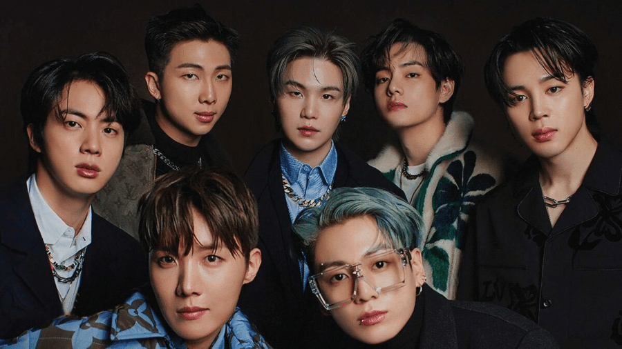

| Home | 1° geração | 2° geração | 3° geração | 4° geração | Extra:BTS |
|---|

K-pop é um gênero músical originado na Coreia na década de 90, que significa
Korean-Pop e hoje possui muitos fãs
por todo o mundo.
É composto por grupos,sem um grupo exato de integrantes,que se apresentam dançando e cantando ao mesmo tempo.
Hoje o grupo mais famoso é
o BTS, tendo um famdom(fã-clube) de aproximadamente 10 milhões de pessoas. Para mais informações
sobre esse
grupo super badalado clique aqui.
[Grupo BTS]
Normalmente, as pessoas acham que o grupo Seo Taiji and Boys foi o primeiro do gênero, porém anterormente tivemos o grupo So Bang Cha, com os integrantes Takyung Kim, Wonkwan Jung e Sangwon Lee e ficou muito conhecido na Coréia nos anos 1980 já que cantavam canções “chiclete” e dançavam. Desde então, houveram muitos grupos e eles são separados em 4 gerações, citaremos os principais grupos de cada e seus maiores sucessos.
Clique abaixo para descobrir mais sobre essas 4 gerações do K-pop
Grupos e seus famdons:
| Grupo | Famdom |
|---|---|
| Seo Taiji and Boys | |
| H.O.T | Sure |
| S.E.S | ---- |
| Rain | ---- |
| Super Junior | E.L.F. |
| Big Bang | V.I.P |
| 2ne1 | Blackjack |
| Shinee | Shinee World |
| 4minute | 4NIa |
| PSY | ---- |
| Exo | Exo-L |
| BTS | Armys |
| Blackpink | Blinks |
| Twice | Once |
| TXT | Moas |
| Stray Kids | Stay |
| Ateez | Atiny |
| Itzy | Midzy |
| Enhypen | Engene |
| Aespa | My |
Clique na flecha para voltar ao topo.
© Copyright Evy_Kelin